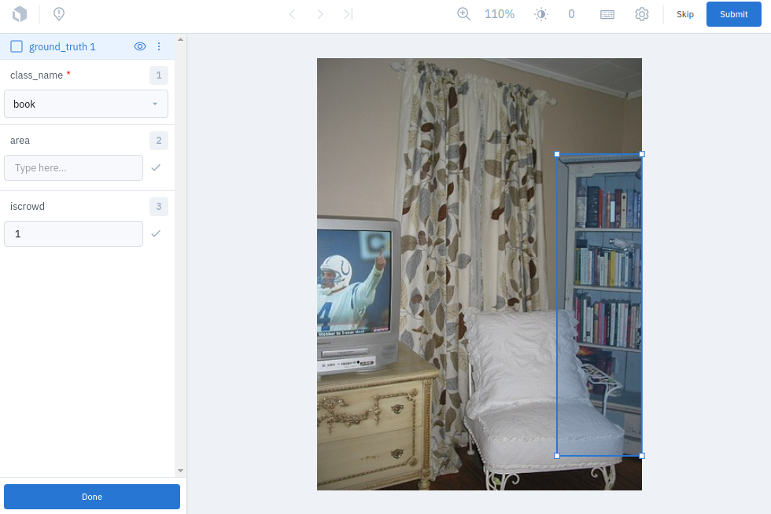
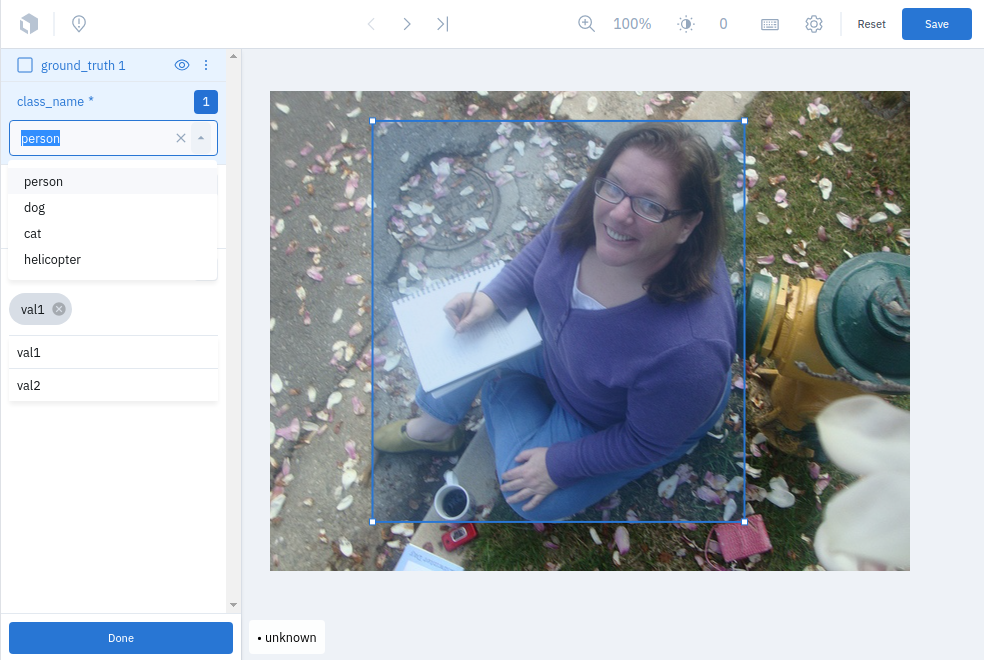

Labelbox Integration ¶¶
Labelbox is one of the most popular cloud-based image and video annotation tools available, and we’ve made it easy to upload your data directly from FiftyOne to Labelbox for labeling.
You can create a free Labelbox account to upload and annotate raw data in the user-friendly Labelbox editor. FiftyOne provides simple setup instructions that you can use to specify the necessary API key and server endpoint to use.
Note
Did you know? You can request, manage, and import annotations from within the FiftyOne App by installing the @voxel51/annotation plugin!
FiftyOne provides an API to create projects, upload data, define label schemas, and download annotations using Labelbox, all programmatically in Python. All of the following label types are supported, for both image and video datasets:

Basic recipe ¶¶
The basic workflow to use Labelbox to add or edit labels on your FiftyOne datasets is as follows:
-
Load a labeled or unlabeled dataset into FiftyOne
-
Explore the dataset using the App or dataset views to locate either unlabeled samples that you wish to annotate or labeled samples whose annotations you want to edit
-
Use the
annotate()method on your dataset or view to upload the samples and optionally their existing labels to Labelbox by setting the parameterbackend="labelbox" -
In Labelbox, perform the necessary annotation work
-
Back in FiftyOne, load your dataset and use the
load_annotations()method to merge the annotations back into your FiftyOne dataset -
If desired, delete the Labelbox tasks and the record of the annotation run from your FiftyOne dataset
The example below demonstrates this workflow.
Note
You must create an account at labelbox.com in order to run this example.
Note that you can store your credentials as described in this section to avoid entering them manually each time you interact with Labelbox.
You’ll also need to install the Labelbox Python client:
pip install labelbox
First, we create the annotation tasks in Labelbox:
import fiftyone as fo
import fiftyone.zoo as foz
from fiftyone import ViewField as F
# Step 1: Load your data into FiftyOne
dataset = foz.load_zoo_dataset(
"quickstart", dataset_name="lb-annotation-example"
)
dataset.persistent = True
dataset.evaluate_detections(
"predictions", gt_field="ground_truth", eval_key="eval"
)
# Step 2: Locate a subset of your data requiring annotation
# Create a view that contains only high confidence false positive model
# predictions, with samples containing the most false positives first
most_fp_view = (
dataset
.filter_labels("predictions", (F("confidence") > 0.8) & (F("eval") == "fp"))
.sort_by(F("predictions.detections").length(), reverse=True)
)
# Retrieve the sample with the most high confidence false positives
sample_id = most_fp_view.first().id
view = dataset.select(sample_id)
# Step 3: Send samples to Labelbox
# A unique identifier for this run
anno_key = "labelbox_basic_recipe"
label_schema = {
"new_ground_truth": {
"type": "detections",
"classes": dataset.distinct("ground_truth.detections.label"),
"attributes": {
"iscrowd": {
"type": "radio",
"values": [True, False],
},
},
},
}
view.annotate(
anno_key,
backend="labelbox",
label_schema=label_schema,
launch_editor=True,
)
print(dataset.get_annotation_info(anno_key))
# Step 4: Perform annotation in Labelbox and save the tasks
Then, once the annotation work is complete, we merge the annotations back into FiftyOne:
import fiftyone as fo
anno_key = "labelbox_basic_recipe"
# Step 5: Merge annotations back into FiftyOne dataset
dataset = fo.load_dataset("lb-annotation-example")
dataset.load_annotations(anno_key)
# Load the view that was annotated in the App
view = dataset.load_annotation_view(anno_key)
session = fo.launch_app(view=view)
# Step 6: Cleanup
# Delete tasks from Labelbox
results = dataset.load_annotation_results(anno_key)
results.cleanup()
# Delete run record (not the labels) from FiftyOne
dataset.delete_annotation_run(anno_key)
Note
See this section to see a variety of common Labelbox annotation patterns.
Setup ¶¶
FiftyOne supports both standard Labelbox cloud accounts and on-premise Labelbox deployments.
The easiest way to get started is to use app.labelbox.com, which simply requires creating an account and then providing your API key as shown below.
Installing the Labelbox client ¶¶
In order to use the Labelbox backend, you must install the Labelbox Python client:
pip install labelbox
Using the Labelbox backend ¶¶
By default, calling
annotate() will
use the CVAT backend.
To use the Labelbox backend, simply set the optional backend parameter of
annotate() to
"labelbox":
view.annotate(anno_key, backend="labelbox", ...)
Alternatively, you can permanently configure FiftyOne to use the Labelbox
backend by setting the FIFTYONE_ANNOTATION_DEFAULT_BACKEND environment
variable:
export FIFTYONE_ANNOTATION_DEFAULT_BACKEND=labelbox
or by setting the default_backend parameter of your
annotation config located at
~/.fiftyone/annotation_config.json:
{
"default_backend": "labelbox"
}
Authentication ¶¶
In order to connect to a Labelbox server, you must provide your API key, which can be done in a variety of ways.
Environment variables (recommended)
The recommended way to configure your Labelbox API key is to store it in the
FIFTYONE_LABELBOX_API_KEY environment variable. This is automatically
accessed by FiftyOne whenever a connection to Labelbox is made.
export FIFTYONE_LABELBOX_API_KEY=...
FiftyOne annotation config
You can also store your credentials in your
annotation config located at
~/.fiftyone/annotation_config.json:
{
"backends": {
"labelbox": {
"api_key": ...,
}
}
}
Note that this file will not exist until you create it.
Keyword arguments
You can manually provide your API key as a keyword argument each time you call
methods like
annotate() and
load_annotations()
that require connections to Labelbox:
view.annotate(
anno_key,
backend="labelbox",
label_field="ground_truth",
api_key=...,
)
Command line prompt
If you have not stored your API key via another method, you will be prompted to enter it interactively in your shell each time you call a method that requires a connection to Labelbox:
view.annotate(
anno_key,
backend="labelbox",
label_field="ground_truth",
launch_editor=True,
)
Please enter your API key.
You can avoid this in the future by setting your `FIFTYONE_LABELBOX_API_KEY` environment variable.
API key: ...
On-premises servers ¶¶
If you have an on-premises Labelbox server, you can configure the URL of your server in any of the following ways:
- Set the
FIFTYONE_LABELBOX_URLenvironment variable:
export FIFTYONE_LABELBOX_URL=http://localhost:8080
- Store the
urlof your server in your annotation config at~/.fiftyone/annotation_config.json:
{
"backends": {
"labelbox": {
"url": "http://localhost:8080"
}
}
}
- Pass the
urlparameter manually each time you callannotate():
view.annotate(
anno_key,
backend="labelbox",
label_field="ground_truth",
url="http://localhost:8080",
api_key=...,
)
Requesting annotations ¶¶
Use the
annotate() method
to send the samples and optionally existing labels in a Dataset or
DatasetView to Labelbox for annotation.
The basic syntax is:
anno_key = "..."
view.annotate(anno_key, backend="labelbox", ...)
The anno_key argument defines a unique identifier for the annotation run, and
you will provide it to methods like
load_annotations(),
get_annotation_info(),
load_annotation_results(),
rename_annotation_run(), and
delete_annotation_run()
to manage the run in the future.
Note
Calling
annotate()
will upload the source media files to the Labelbox server.
In addition,
annotate()
provides various parameters that you can use to customize the annotation tasks
that you wish to be performed.
The following parameters are supported by all annotation backends:
-
backend ( None): the annotation backend to use. Use
"labelbox"for the Labelbox backend. The supported values arefiftyone.annotation_config.backends.keys()and the default isfiftyone.annotation_config.default_backend -
media_field ( “filepath”): the sample field containing the path to the source media to upload
-
launch_editor ( False): whether to launch the annotation backend’s editor after uploading the samples
The following parameters allow you to configure the labeling schema to use for your annotation tasks. See this section for more details:
-
label_schema ( None): a dictionary defining the label schema to use. If this argument is provided, it takes precedence over
label_fieldandlabel_type -
label_field ( None): a string indicating a new or existing label field to annotate
-
label_type ( None): a string indicating the type of labels to annotate. The possible label types are:
-
"classification": a single classification stored inClassificationfields -
"classifications": multilabel classifications stored inClassificationsfields -
"detections": object detections stored inDetectionsfields -
"instances": instance segmentations stored inDetectionsfields with theirmaskattributes populated -
"polylines": polylines stored inPolylinesfields with theirfilledattributes set toFalse -
"polygons": polygons stored inPolylinesfields with theirfilledattributes set toTrue -
"keypoints": keypoints stored inKeypointsfields -
"segmentation": semantic segmentations stored inSegmentationfields -
"scalar": scalar labels stored inIntField,FloatField,StringField, orBooleanFieldfields
All new label fields must have their type specified via this argument or in
label_schema
-
classes ( None): a list of strings indicating the class options for
label_fieldor all fields inlabel_schemawithout classes specified. All new label fields must have a class list provided via one of the supported methods. For existing label fields, if classes are not provided by this argument norlabel_schema, the observed labels on your dataset are used -
attributes ( True): specifies the label attributes of each label field to include (other than their
label, which is always included) in the annotation export. Can be any of the following: -
True: export all label attributes -
False: don’t export any custom label attributes -
a list of label attributes to export
-
a dict mapping attribute names to dicts specifying the
type,values, anddefaultfor each attribute
If a label_schema is also provided, this parameter determines which
attributes are included for all fields that do not explicitly define their
per-field attributes (in addition to any per-class attributes)
-
mask_targets ( None): a dict mapping pixel values to semantic label strings. Only applicable when annotating semantic segmentations
-
allow_additions ( True): whether to allow new labels to be added. Only applicable when editing existing label fields
-
allow_deletions ( True): whether to allow labels to be deleted. Only applicable when editing existing label fields
-
allow_label_edits ( True): whether to allow the
labelattribute of existing labels to be modified. Only applicable when editing existing fields withlabelattributes -
allow_index_edits ( True): whether to allow the
indexattribute of existing video tracks to be modified. Only applicable when editing existing frame fields withindexattributes -
allow_spatial_edits ( True): whether to allow edits to the spatial properties (bounding boxes, vertices, keypoints, masks, etc) of labels. Only applicable when editing existing spatial label fields
In addition, the following Labelbox-specific parameters from
LabelboxBackendConfig
can also be provided:
-
project_name ( None): a name for the Labelbox project that will be created. The default is
"FiftyOne_<dataset_name>" -
members (None): an optional list of
(email, role)tuples specifying the email addresses and roles of users to add to the project. If a user is not a member of the project’s organization, an email invitation will be sent to them. The supported roles are["LABELER", "REVIEWER", "TEAM_MANAGER", "ADMIN"] -
classes_as_attrs ( True): whether to show every object class at the top level of the editor (False) or whether to show the label field at the top level and annotate the class as a required attribute of each object (True)
-
export_version ( “v2”): the Labelbox export format and API version to use. Supported values are
("v1", "v2")
Note
See this section for details about editing existing labels.
Label schema ¶¶
The label_schema, label_field, label_type, classes, attributes, and
mask_targets parameters to
annotate() allow
you to define the annotation schema that you wish to be used.
The label schema may define new label field(s) that you wish to populate, and it may also include existing label field(s), in which case you can add, delete, or edit the existing labels on your FiftyOne dataset.
The label_schema argument is the most flexible way to define how to construct
tasks in Labelbox. In its most verbose form, it is a dictionary that defines
the label type, annotation type, possible classes, and possible attributes for
each label field:
anno_key = "..."
label_schema = {
"new_field": {
"type": "classifications",
"classes": ["class1", "class2"],
"attributes": {
"attr1": {
"type": "checkbox",
"values": ["val1", "val2"],
},
"attr2": {
"type": "radio",
"values": [True, False],
}
},
},
"existing_field": {
"classes": ["class3", "class4"],
"attributes": {
"attr3": {
"type": "text",
}
}
},
}
dataset.annotate(anno_key, backend="labelbox", label_schema=label_schema)
You can also define class-specific attributes by setting elements of the
classes list to dicts that specify groups of classes and their
corresponding attributes. For example, in the configuration below, attr1
only applies to class1 and class2 while attr2 applies to all classes:
anno_key = "..."
label_schema = {
"new_field": {
"type": "detections",
"classes": [\
{\
"classes": ["class1", "class2"],\
"attributes": {\
"attr1": {\
"type": "radio",\
"values": ["val1", "val2"],\
}\
}\
},\
"class3",\
"class4",\
],
"attributes": {
"attr2": {
"type": "radio",
"values": [True, False],
}
},
},
}
dataset.annotate(anno_key, backend="labelbox", label_schema=label_schema)
Alternatively, if you are only editing or creating a single label field, you
can use the label_field, label_type, classes, attributes, and
mask_targets parameters to specify the components of the label schema
individually:
anno_key = "..."
label_field = "new_field",
label_type = "classifications"
classes = ["class1", "class2"]
# These are optional
attributes = {
"attr1": {
"type": "radio",
"values": ["val1", "val2"],
},
"attr2": {
"type": "radio",
"values": [True, False],
}
}
dataset.annotate(
anno_key,
backend="labelbox",
label_field=label_field,
label_type=label_type,
classes=classes,
attributes=attributes,
)
When you are annotating existing label fields, you can omit some of these
parameters from
annotate(), as
FiftyOne can infer the appropriate values to use:
-
label_type: if omitted, the
Labeltype of the field will be used to infer the appropriate value for this parameter -
classes: if omitted for a non-semantic segmentation field, the observed labels on your dataset will be used to construct a classes list
Note
See this section for details about editing existing labels.
Label attributes ¶¶
The attributes parameter allows you to configure whether
custom attributes beyond the default label attribute
are included in the annotation tasks.
When adding new label fields for which you want to include attributes, you must use the dictionary syntax demonstrated below to define the schema of each attribute that you wish to label:
anno_key = "..."
attributes = {
"occluded": {
"type": "radio",
"values": [True, False],
},
"weather": {
"type": "checkbox",
"values": ["cloudy", "sunny", "overcast"],
},
"caption": {
"type": "text",
}
}
view.annotate(
anno_key,
backend="labelbox",
label_field="new_field",
label_type="detections",
classes=["dog", "cat", "person"],
attributes=attributes,
)
You can always omit this parameter if you do not require attributes beyond the
default label.
For Labelbox, the following type values are supported:
-
text: a free-form text box. In this case,valuesis unused -
radio: a radio button list UI. In this case,valuesis required -
checkbox: a list of checkboxes. In this case,valuesis required
When you are annotating existing label fields, the attributes parameter can
take additional values:
-
True(default): export all custom attributes observed on the existing labels, using their observed values to determine the appropriate UI type and possible values, if applicable -
False: do not include any custom attributes in the export -
a list of custom attributes to include in the export
-
a full dictionary syntax described above
Note that only scalar-valued label attributes are supported. Other attribute types like lists, dictionaries, and arrays will be omitted.
Note
Labelbox does not support default values for attributes, so the default
key described here will be ignored if
included in label schemas provided when annotating with Labelbox.
Video label attributes ¶¶
When annotating spatiotemporal objects in videos, each object attribute
specification can include a mutable property that controls whether the
attribute’s value can change between frames for each object:
anno_key = "..."
attributes = {
"type": {
"type": "checkbox",
"values": ["sedan", "suv", "truck"],
"mutable": False,
},
"occluded": {
"type": "radio",
"values": [True, False],
"mutable": True,
},
}
view.annotate(
anno_key,
backend="labelbox",
label_field="frames.new_field",
label_type="detections",
classes=["vehicle"],
attributes=attributes,
)
The meaning of the mutable attribute is defined as follows:
-
True(default): the attribute is dynamic and can have a different value for every frame in which the object track appears -
False: the attribute is static and is the same for every frame in which the object track appears ( Not yet supported)
Loading annotations ¶¶
After your annotations tasks in the annotation backend are complete, you can
use the
load_annotations()
method to download them and merge them back into your FiftyOne dataset.
view.load_annotations(anno_key)
The anno_key parameter is the unique identifier for the annotation run that
you provided when calling
annotate(). You
can use
list_annotation_runs()
to see the available keys on a dataset.
Note
By default, calling
load_annotations()
will not delete any information for the run from the annotation backend.
However, you can pass cleanup=True to delete all information associated
with the run from the backend after the annotations are downloaded.
Specifically, it will delete the project and ontology
associated with this annotation run. Data rows are not deleted since they
can be reused by other annotation runs.
You can use the optional dest_field parameter to override the task’s
label schema and instead load annotations into different field name(s) of your
dataset. This can be useful, for example, when editing existing annotations, if
you would like to do a before/after comparison of the edits that you import. If
the annotation run involves multiple fields, dest_field should be a
dictionary mapping label schema field names to destination field names.
Managing annotation runs ¶¶
FiftyOne provides a variety of methods that you can use to manage in-progress or completed annotation runs.
For example, you can call
list_annotation_runs()
to see the available annotation keys on a dataset:
dataset.list_annotation_runs()
Or, you can use
get_annotation_info()
to retrieve information about the configuration of an annotation run:
info = dataset.get_annotation_info(anno_key)
print(info)
Use load_annotation_results()
to load the AnnotationResults
instance for an annotation run.
All results objects provide a cleanup()
method that you can use to delete all information associated with a run from
the annotation backend.
results = dataset.load_annotation_results(anno_key)
results.cleanup()
In addition, the
AnnotationResults
subclasses for each backend may provide additional utilities such as support
for programmatically monitoring the status of the annotation tasks in the run.
You can use
rename_annotation_run()
to rename the annotation key associated with an existing annotation run:
dataset.rename_annotation_run(anno_key, new_anno_key)
Finally, you can use
delete_annotation_run()
to delete the record of an annotation run from your FiftyOne dataset:
dataset.delete_annotation_run(anno_key)
Note
Calling
delete_annotation_run()
only deletes the record of the annotation run from your FiftyOne
dataset; it will not delete any annotations loaded onto your dataset via
load_annotations(),
nor will it delete any associated information from the annotation backend.
Examples ¶¶
This section demonstrates how to perform some common annotation workflows on a FiftyOne dataset using the Labelbox backend.
Note
All of the examples below assume you have configured your Labelbox server and API key as described in this section.
Adding new label fields ¶¶
In order to annotate a new label field, you can provide the label_field,
label_type, and classes parameters to
annotate() to
define the annotation schema for the field:
import fiftyone as fo
import fiftyone.zoo as foz
dataset = foz.load_zoo_dataset("quickstart")
view = dataset.take(1)
anno_key = "labelbox_new_field"
view.annotate(
anno_key,
backend="labelbox",
label_field="new_classifications",
label_type="classifications",
classes=["dog", "cat", "person"],
launch_editor=True,
)
print(dataset.get_annotation_info(anno_key))
# Create annotations in Labelbox
dataset.load_annotations(anno_key, cleanup=True)
dataset.delete_annotation_run(anno_key)
Alternatively, you can use the label_schema argument to define the same
labeling task:
import fiftyone as fo
import fiftyone.zoo as foz
dataset = foz.load_zoo_dataset("quickstart")
view = dataset.take(1)
anno_key = "labelbox_new_field"
label_schema = {
"new_classifications": {
"type": "classifications",
"classes": ["dog", "cat", "person"],
}
}
view.annotate(
anno_key,
backend="labelbox",
label_schema=label_schema,
launch_editor=True,
)
print(dataset.get_annotation_info(anno_key))
# Create annotations in Labelbox
dataset.load_annotations(anno_key, cleanup=True)
dataset.delete_annotation_run(anno_key)

Editing labels with a free Labelbox account ¶¶
A common use case is to fix annotation mistakes that you discovered in your datasets through FiftyOne.
If you have a paid Labelbox account with access to Labelbox’s Model Assisted Labeling feature, see this section for the recommended workflow for editing existing labels.
For free Labelbox users, one possible workflow for editing existing labels is the following:
-
Tag the labels that need editing in FiftyOne
-
Use FiftyOne to construct the label schema for the existing label field
-
Upload the samples containing the tagged labels to Labelbox using
annotate()using a new (temporary) label field to hold the edited labels -
Perform the annotation work in Labelbox, and download the results
-
Use the FiftyOne App to compare the newly loaded labels with the previously tagged labels to make sure you’re happy with the edits
-
Use
merge_labels()to merge edits into the original label field and then delete the tagged labels that you edited
The example snippet below demonstrates this workflow:
import fiftyone as fo
import fiftyone.zoo as foz
dataset = foz.load_zoo_dataset("quickstart")
view = dataset.take(1)
session = fo.launch_app(view=view)
# In the App, tag some ground truth labels with the "edit" tag...
# Create view that only contains samples having labels with the "edit" tag
edit_view = view.match_labels(tags="edit")
#
# Create an annotation run to reannotate the chosen samples in a new
# `ground_truth_edits` field
#
anno_key = "labelbox_edit_labels"
label_schema = {
"ground_truth_edits": {
"type": "detections",
"classes": dataset.distinct("ground_truth.detections.label"),
"attributes": {
"iscrowd": {
"type": "radio",
"values": [True, False],
}
}
}
}
edit_view.annotate(
anno_key,
backend="labelbox",
label_schema=label_schema,
launch_editor=True,
)
print(dataset.get_annotation_info(anno_key))
# In Labelbox, re-annotate the relevant objects...
# Download the results
dataset.load_annotations(anno_key, cleanup=True)
dataset.delete_annotation_run(anno_key)
# In the App, compare the tagged and re-annotated labels
session.view = edit_view
# If the edits look good, merge them into the `ground_truth` field
# and delete the previously tagged labels
dataset.merge_labels("ground_truth_edits", "ground_truth")
dataset.delete_labels(tags="edit")

Editing existing labels ¶¶
Warning
Uploading existing labels is not yet implemented for the Labelbox backend.
See this section for one possible workflow for editing existing labels with Labelbox.
Annotating multiple fields ¶¶
The label_schema argument allows you to define annotation tasks for multiple
fields at once:
import fiftyone as fo
import fiftyone.zoo as foz
dataset = foz.load_zoo_dataset("quickstart")
view = dataset.take(1)
anno_key = "labelbox_multiple_fields"
label_schema = {
"people": {
"type": "detections",
"classes": ["person"],
},
"keypoints": {
"type": "keypoints",
"classes": ["person", "cat", "dog", "food"],
"attributes": {
"occluded": {
"type": "radio",
"values": [True, False],
}
}
}
}
view.annotate(
anno_key,
backend="labelbox",
label_schema=label_schema,
launch_editor=True,
)
print(dataset.get_annotation_info(anno_key))
# Add annotations in Labelbox...
dataset.load_annotations(anno_key, cleanup=True)
dataset.delete_annotation_run(anno_key)

Configuring Labelbox projects ¶¶
When using the Labelbox backend, you can provide the optional project_name
and members parameters to
annotate() to
configure the Labelbox project that is created.
The members parameter can contain a list of (email, role) tuples defining
the email addresses and project-level roles of members to add to the Labelbox
project. The supported roles are:
-
"LABELER" -
"REVIEWER" -
"TEAM_MANAGER" -
"ADMIN"
If any email addresses do not correspond to users already in your organization, an email invitation will be sent to them.
import fiftyone as fo
import fiftyone.zoo as foz
dataset = foz.load_zoo_dataset("quickstart")
view = dataset.take(5)
anno_key = "labelbox_assign_users"
project_name = "your_project_name"
members = [\
("user1@domain.com", "LABELER"),\
("user2@domain.com", "REVIEWER"),\
("user3@domain.com", "TEAM_MANAGER"),\
]
view.annotate(
anno_key,
backend="labelbox",
label_field="people",
label_type="detections",
classes=["person"],
project_name=project_name,
members=members,
launch_editor=True,
)
print(dataset.get_annotation_info(anno_key))
# Cleanup (without downloading results)
results = dataset.load_annotation_results(anno_key)
results.cleanup()
dataset.delete_annotation_run(anno_key)
Scalar labels ¶¶
Label fields are the preferred way to store information for common tasks such
as classification and detection in your FiftyOne datasets. However, you can
also store Labelbox annotations in scalar fields of type float, int, str,
or bool.
When storing annotations in scalar fields, the label_field parameter is still
used to define the name of the field, but the classes argument is now
optional and the attributes argument is unused.
If classes are provided, you will be able to select from these values in
Labelbox; otherwise, the Labelbox tag will show the label_field name and you
must enter the appropriate scalar in the value attribute of the tag.
import fiftyone as fo
import fiftyone.zoo as foz
dataset = foz.load_zoo_dataset("quickstart")
view = dataset.take(1)
anno_key = "labelbox_scalar_fields"
# Create two scalar fields, one with classes and one without
label_schema = {
"scalar1": {
"type": "scalar",
},
"scalar2": {
"type": "scalar",
"classes": ["class1", "class2", "class3"],
}
}
view.annotate(
anno_key,
backend="labelbox",
label_schema=label_schema,
launch_editor=True,
)
print(dataset.get_annotation_info(anno_key))
# Cleanup (without downloading results)
results = dataset.load_annotation_results(anno_key)
results.cleanup()
dataset.delete_annotation_run(anno_key)
Uploading alternate media ¶¶
In some cases, you may want to upload media files other than those stored in
the filepath field of your dataset’s samples for annotation. For example, you
may have a dataset with personal information like faces or license plates that
must be anonymized before uploading for annotation.
The recommended approach in this case is to store the alternative media files
for each sample on disk and record these paths in a new field of your FiftyOne
dataset. You can then specify this field via the media_field parameter of
annotate().
For example, let’s upload some blurred images to Labelbox for annotation:
import os
import cv2
import fiftyone as fo
import fiftyone.zoo as foz
dataset = foz.load_zoo_dataset("quickstart")
view = dataset.take(1)
alt_dir = "/tmp/blurred"
if not os.path.exists(alt_dir):
os.makedirs(alt_dir)
# Blur images
for sample in view:
filepath = sample.filepath
alt_filepath = os.path.join(alt_dir, os.path.basename(filepath))
img = cv2.imread(filepath)
cv2.imwrite(alt_filepath, cv2.blur(img, (20, 20)))
sample["alt_filepath"] = alt_filepath
sample.save()
anno_key = "labelbox_alt_media"
view.annotate(
anno_key,
backend="labelbox",
label_field="objects",
label_type="detections",
classes=["person", "car"],
media_field="alt_filepath",
launch_editor=True,
)
print(dataset.get_annotation_info(anno_key))
# Create annotations in Labelbox
dataset.load_annotations(anno_key, cleanup=True)
dataset.delete_annotation_run(anno_key)

Annotating classes directly ¶¶
By default, the Labelbox editor is constructed so that all label fields being annotated are shown on the left sidebar at the top-level. When an object is annotated, the class name is then selected as an attribute.
However, it can be useful to directly show the object classes at the top-level
of the sidebar to avoid additional clicks. The classes_as_attrs argument can
be set to False to provide this functionality.
Note
When classes_as_attrs=False, only one label field of each type of spatial
label is allowed. For example, only one “detections” label field can be
annotated. Annotating multiple “scalar”, “classification”, an
“classifications” fields is still allowed.
import fiftyone as fo
import fiftyone.zoo as foz
dataset = foz.load_zoo_dataset("quickstart")
view = dataset.take(1)
anno_key = "labelbox_classes_as_attrs"
view.annotate(
anno_key,
backend="labelbox",
label_field="new_detections",
label_type="detections",
classes=["dog", "cat", "person"],
classes_as_attrs=False,
launch_editor=True,
)
print(dataset.get_annotation_info(anno_key))
# Create annotations in Labelbox...
dataset.load_annotations(anno_key, cleanup=True)
dataset.delete_annotation_run(anno_key)

Annotating videos ¶¶
You can annotate for video datasets using the Labelbox backend through the
annotate()
method.
import fiftyone as fo
import fiftyone.zoo as foz
dataset = foz.load_zoo_dataset("quickstart-video")
view = dataset.take(1)
anno_key = "labelbox_video"
view.annotate(
anno_key,
backend="labelbox",
label_field="frames.new_detections",
label_type="detections",
classes=["person"],
launch_editor=True,
)
print(dataset.get_annotation_info(anno_key))
# Create annotations in Labelbox...
# Download annotations
dataset.load_annotations(anno_key)
# Load the view that was annotated in the App
view = dataset.load_annotation_view(anno_key)
session = fo.launch_app(view=view)
# Cleanup
results = dataset.load_annotation_results(anno_key)
results.cleanup()
dataset.delete_annotation_run(anno_key)
Note
Prepend "frames." to reference frame-level fields when calling
annotate().
Additional utilities ¶¶
You can perform additional Labelbox-specific operations to monitor the progress
of an annotation project initiated by
annotate() via
the returned
LabelboxAnnotationResults
instance.
The sections below highlight some common actions that you may want to perform.
Viewing project status ¶¶
You can use the
get_status()
and
print_status()
methods to get information about the current status of the project for that
annotation run:
import fiftyone as fo
import fiftyone.zoo as foz
dataset = foz.load_zoo_dataset("quickstart")
view = dataset.take(3)
anno_key = "labelbox_status"
view.annotate(
anno_key,
backend="labelbox",
label_field="people",
label_type="detections",
classes=["person"],
)
# Print the project's status
results = dataset.load_annotation_results(anno_key)
results.print_status()
results.cleanup()
dataset.delete_annotation_run(anno_key)
Project: FiftyOne_quickstart
ID: cktixtv70e8zm0yba501v0ltz
Created at: 2021-09-13 17:46:21+00:00
Updated at: 2021-09-13 17:46:24+00:00
Members:
User: user1
Name: user1
Role: Admin
Email: USER1_EMAIL@email.com
ID: ckl137jfiss1c07320dacd81l
User: user2
Name: FIRSTNAME LASTNAME
Role: Labeler
Email: USER2_EMAIL@email.com
ID: ckl137jfiss1c07320dacd82y
Reviews:
Positive: 2
Zero: 0
Negative: 1
Deleting projects ¶¶
You can use
delete_project()
or
delete_projects()
methods to delete specific Labelbox project(s) associated with an annotation
run.
import fiftyone as fo
import fiftyone.zoo as foz
dataset = foz.load_zoo_dataset("quickstart")
view = dataset.take(1)
anno_key = "labelbox_delete_tasks"
view.annotate(
anno_key,
backend="labelbox",
label_field="people",
label_type="detections",
classes=["person"],
)
results = dataset.load_annotation_results(anno_key)
api = results.connect_to_api()
api.delete_project(
results.project_id,
delete_batches=True,
delete_ontologies=False,
)
# OR
# List all projects or datasets associated with your Labelbox account
project_ids = api.list_projects()
dataset_ids = api.list_datasets()
# Delete all projects and datasets from your Labelbox account
api.delete_projects(project_ids)
api.delete_datasets(dataset_ids)
Note
Note that passing delete_batches=True when deleting projects will not
delete the corresponding data rows from Labelbox when using the V2 export
API (the default).